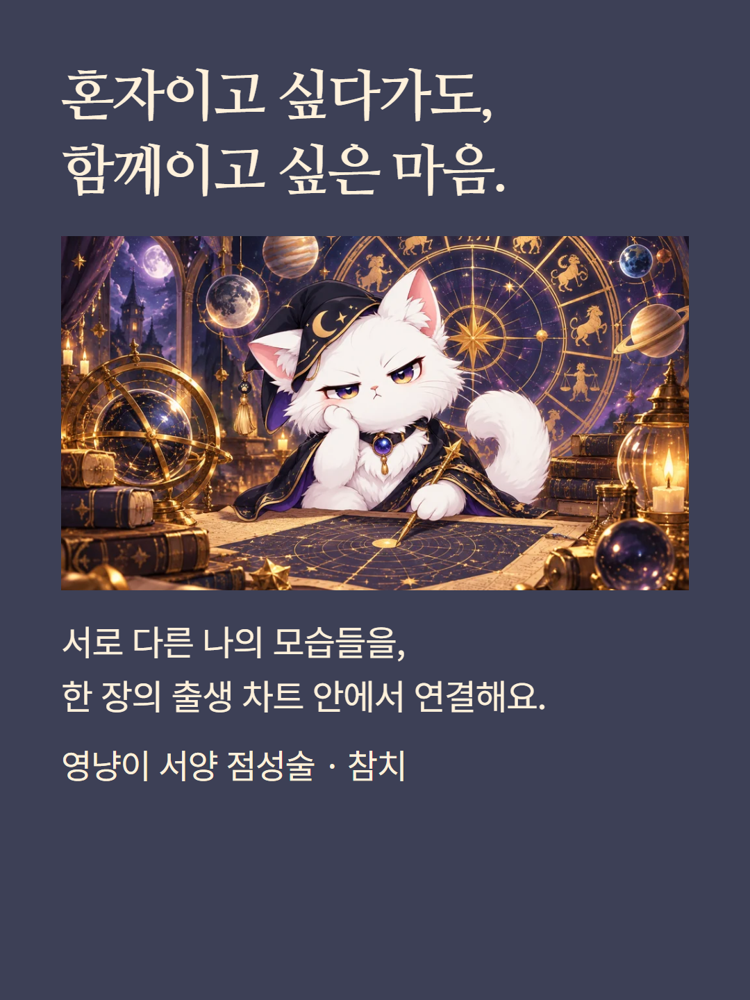
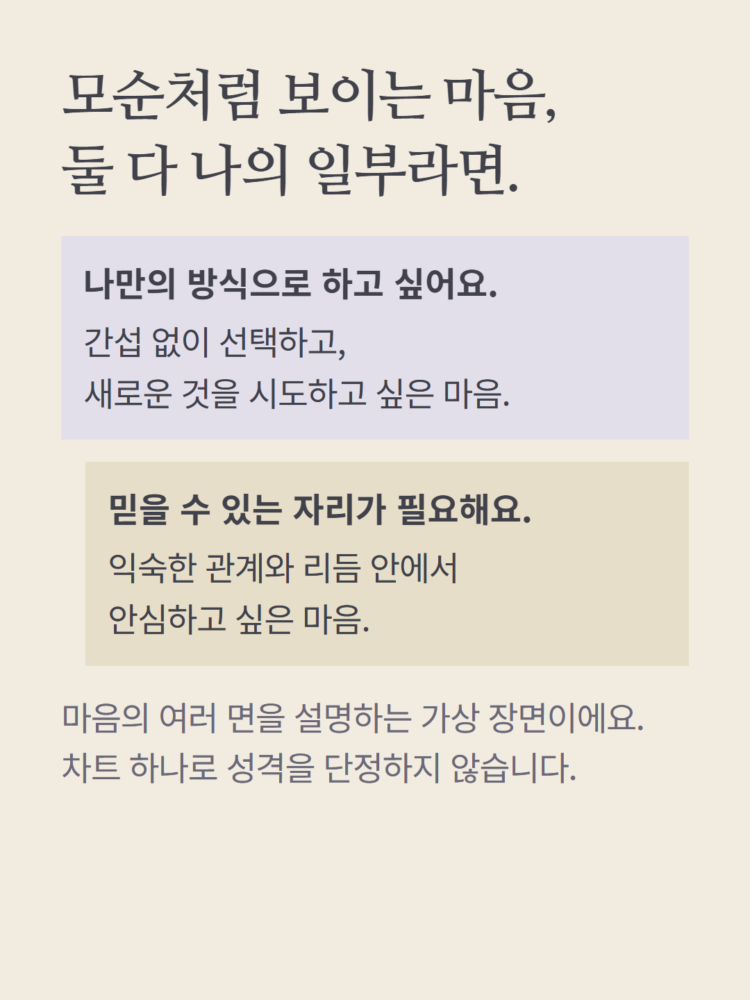
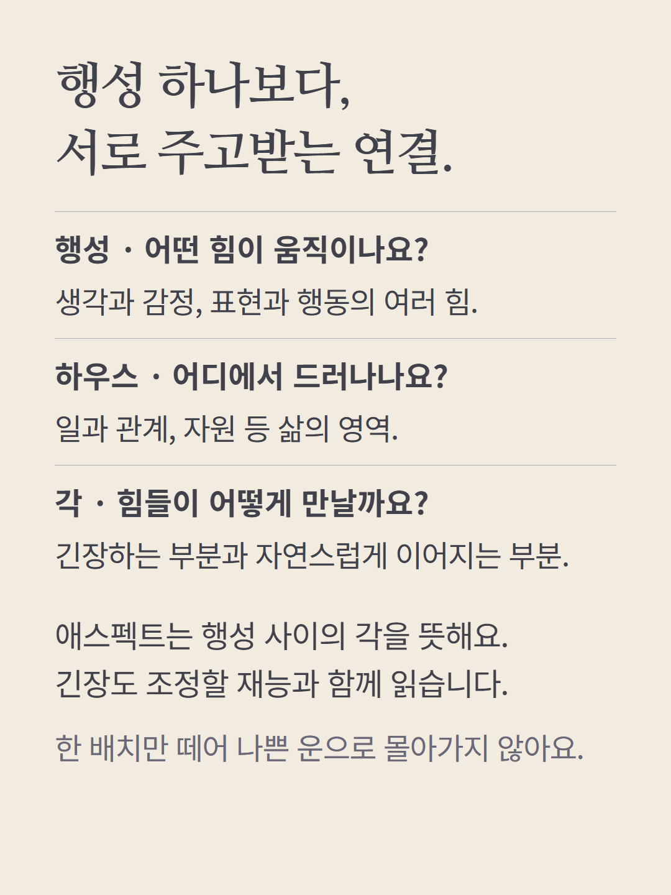
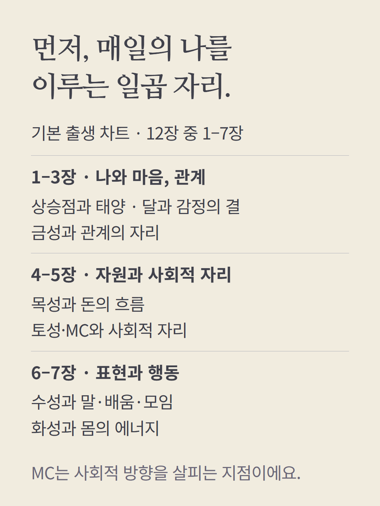
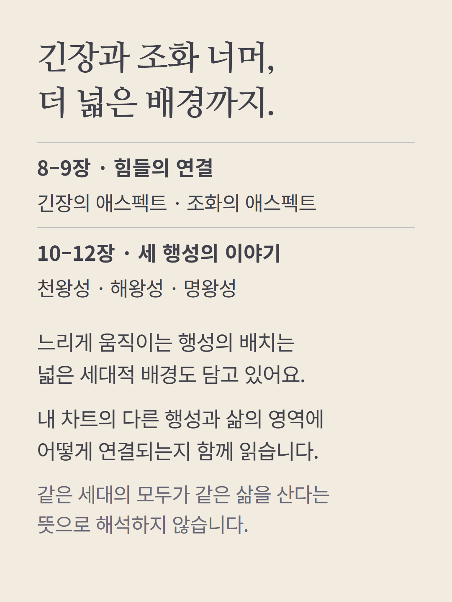
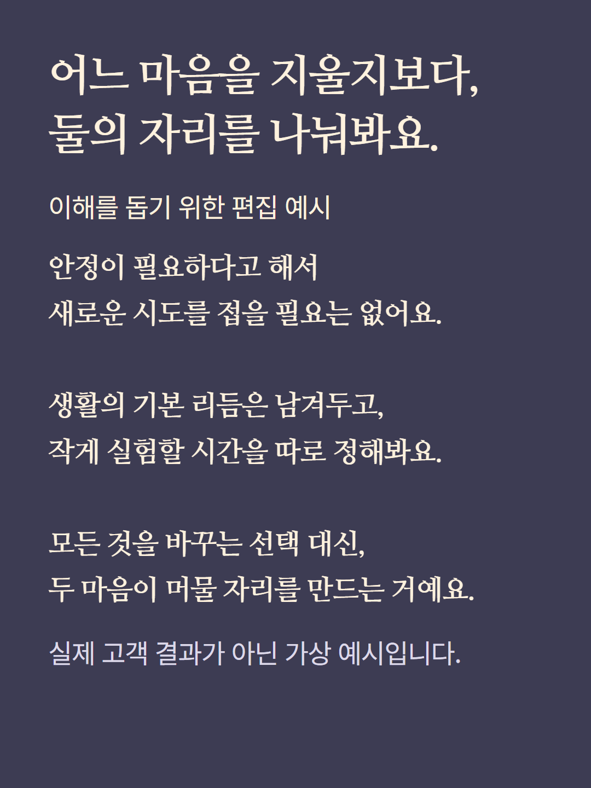
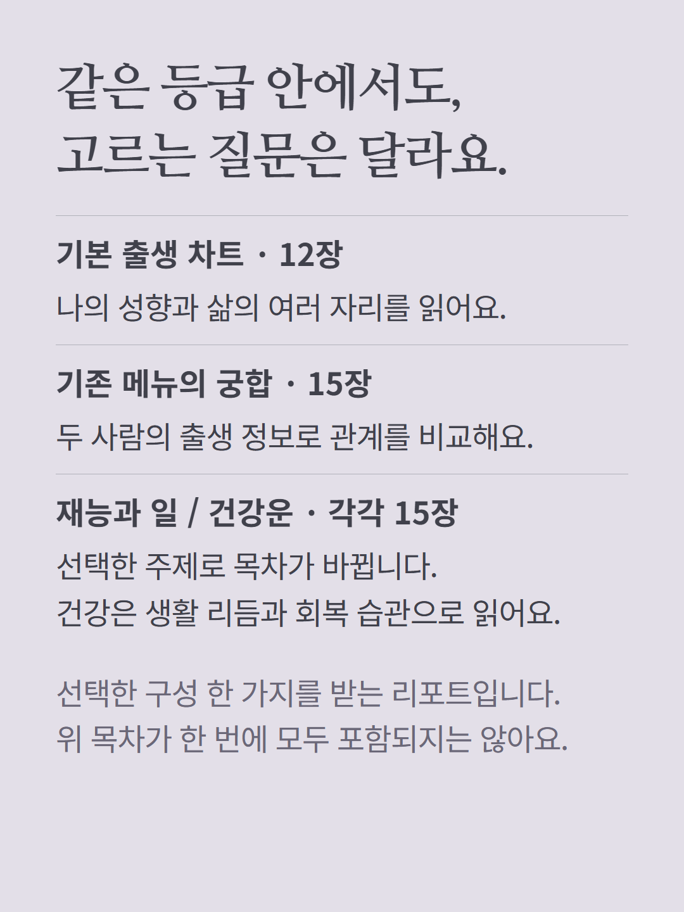
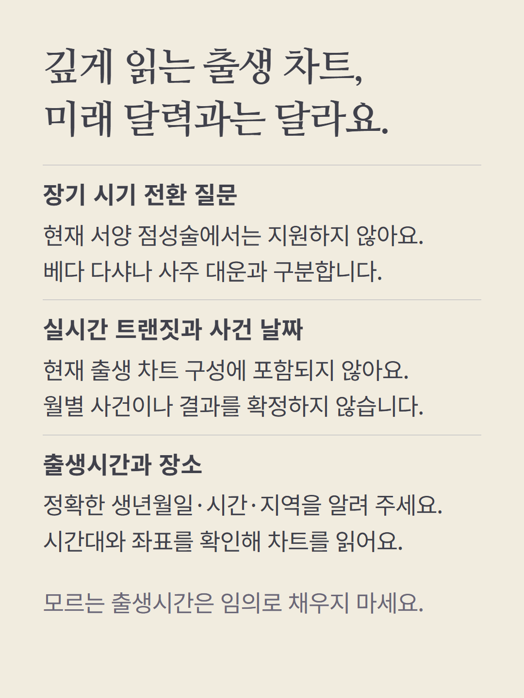
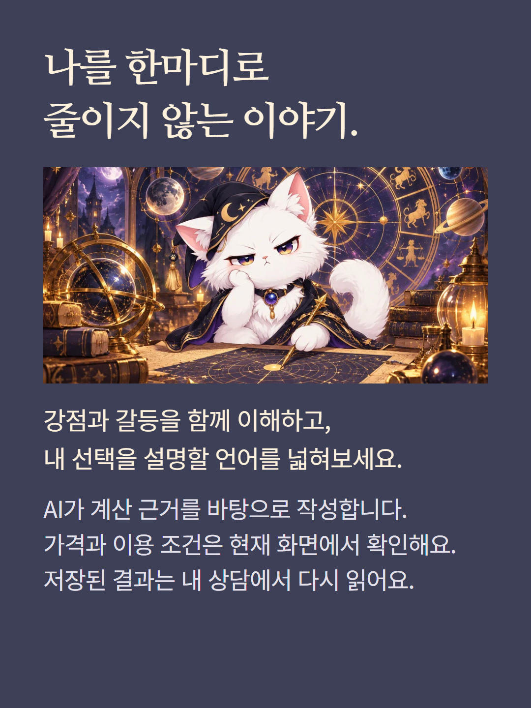

서양 점성술 참치의 기본 출생 차트 리포트는 12장입니다. 태양·달·상승점, 행성·하우스·각과 천왕성·해왕성·명왕성을 함께 읽습니다. 기존 구성 선택 화면의 궁합·재능과 일·건강 등은 각각 별도 목차를 사용하므로 선택 후 확인해 주세요. 현재 질문 기반 추천에서는 서양 점성술의 장기 시기 전환을 지원하지 않으며, 참치가 실시간 트랜짓·다샤·월별 미래 예측을 뜻하지 않습니다. 출생시간·지역·시간대가 필요합니다. 예시는 가상 편집이고 AI 작성 리포트입니다. 가격과 이용 조건은 기존 화면에서 확인하세요.